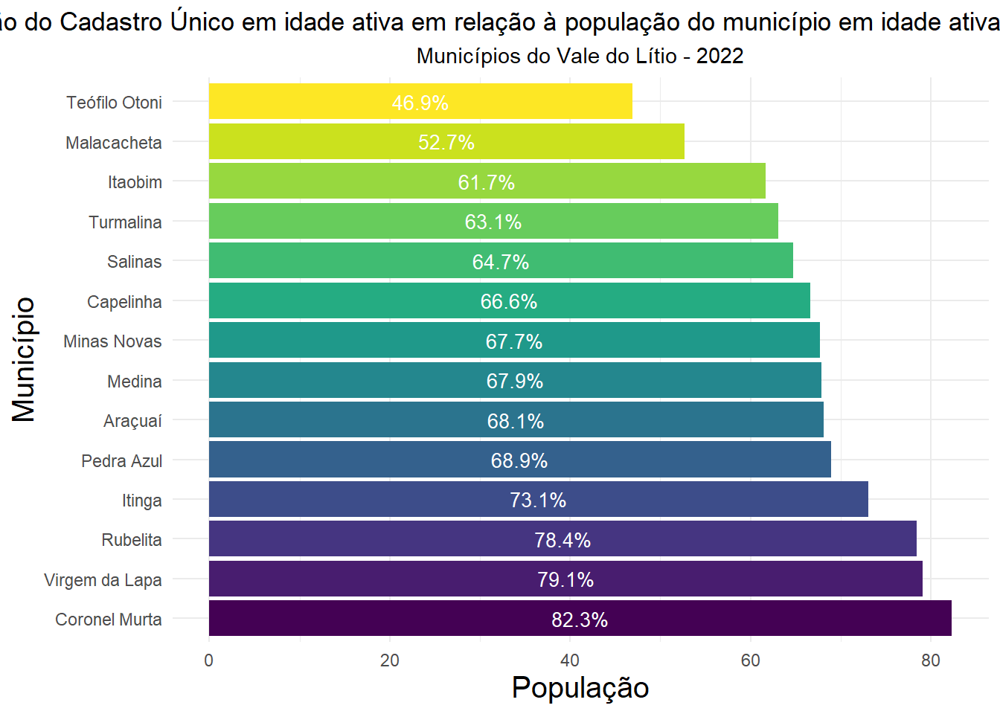
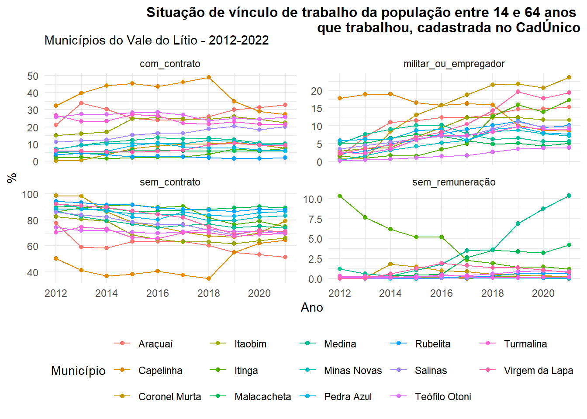
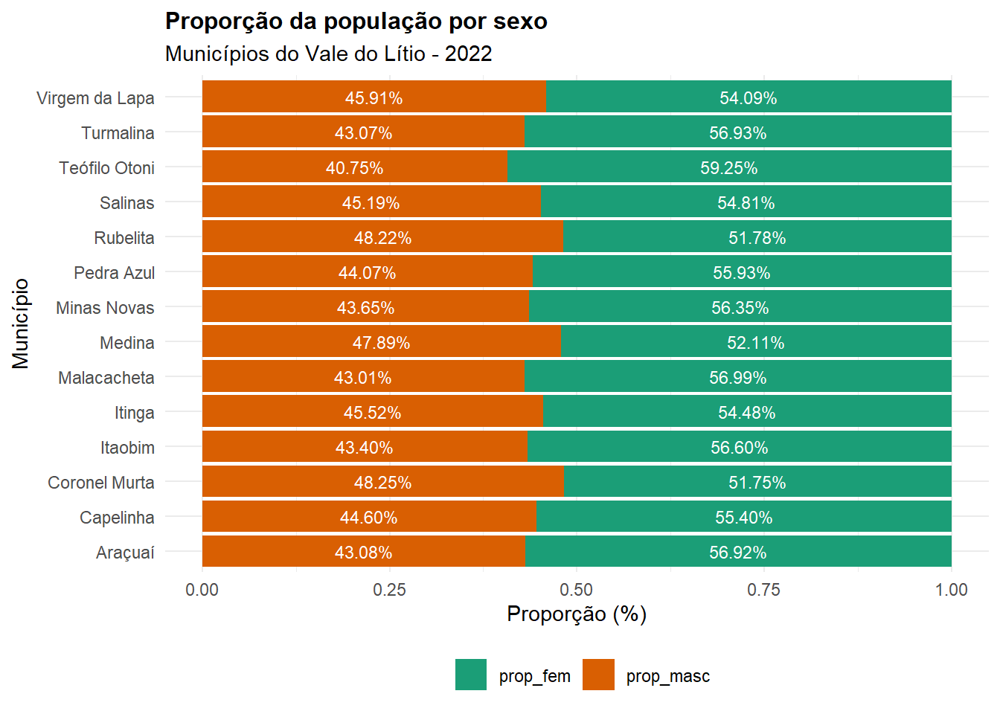
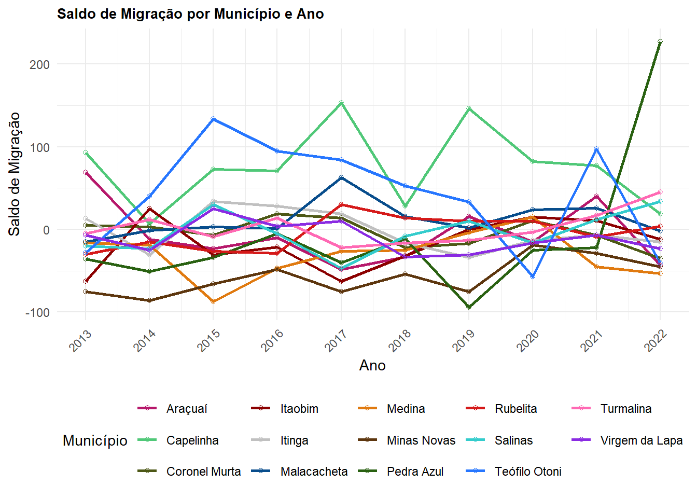
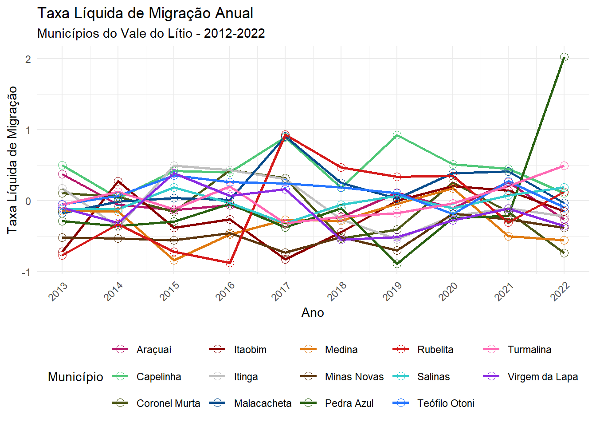

3 Migração com CadÚnico
[Em edição]
4 O que os dados do CadÚnico podem revelar sobre a população em idade ativa e migração?
O Censo Demográfico 2022 é a principal referência para análise do perfil da população e tendências demográficas. A base anual de dados do Cadastro Único do Governo Federal (CadÚnico) abriga a parte da população em situação de vulnerabilidade financeira, sendo referência para os programas sociais. A população cadastrada tem a obrigatoriedade de realizar a atualização dos dados a cada dois anos contados da data de inscrição ou última atualização. Essa base administrativa é submetida a processos de validação por meio da integração com o Cadastro Nacional de Informações Sociais (CNIS) e outras bases oficiais, qualificando o registro das informações.
Com base em 2022 como ano de referência 2022 para ambas as bases, apurou o percentual do segmento populacional da faixa etária de 14 a 64 anos, ou seja, em idade ativa para o trabalho cadastrada no CadÚnico em relação ao mesmo segmento etário na população dos municípios do Vale do Lítio do Censo Demográfico 2022 . No município de Teófilo Otoni, 44,61% de sua população entre 14 e 64 anos encontra-se cadastrada no CadÚnico, seguido de Malacacheta com 53,82%. Os municípios de Coronel Murta e Rubelita possuem o maior percentual da população desse grupo etário inscrito no CadÚnico, com mais de 80% da população em idade ativa para o trabalho cadastrada no Cadastro Único, ou seja, em situação de pobreza monetária.

O CadÚnico é uma ferramenta que direciona o planejamento de políticas públicas baseando-se em informações sociais, demográficas e residenciais de uma parte significativa da população brasileira, sob uma perspectiva longitudinal.Conforme a legislação brasileira em vigor, este estudo considerou a população em idade ativa como sendo o segmento com idade compreendida entre 14 e 64 anos dos municípios do Vale do Lítio no período entre 2012 a 2022, cadastrada no CadÚnico.
4.0.1 Taxa de Analfabetismo
Para o cálculo da taxa de analfabetismo da população inscrita no CadÚnico em idade ativa para o trabalho, considerou-se a faixa etária entre 15 e 64 anos. Observa-se que Pedra Azul e Malacacheta acumulam o maior percentual de pessoas em idade para o trabalho na situação de analfabetismo em 2022, sendo 14,37% e 12,85%, respectivamente. Os municípios de Turmalina se posicionam no outro extremo, com as menores taxas de analfabetismo, sendo 5,33% e 5,64%, respectivamente. A diferença entre as taxas nos dois extremos do período analisado indica a mudança líquida ocorrida. Deste modo, observa-se que somente Araçuaí apresentou redução da taxa de analfabetismo em 0.41 pontos percentuais. Minas Novas foi o munícipio com maior piora no indicador com 7.63 pontos negativos de diferença entre 2012-2022.

Fonte: Base Identificada do Cadastro Único do Governo Federal.
Para o cálculo da taxa de analfabetismo da população inscrita no CadÚnico em idade ativa para o trabalho, considerou-se a faixa etária entre 15 e 64 anos. Observa-se que Pedra Azul e Malacacheta acumulam o maior percentual de pessoas em idade para o trabalho na situação de analfabetismo em 2022, sendo 14,37% e 12,85%, respectivamente. Os municípios de Turmalina se posicionam no outro extremo, com as menores taxas de analfabetismo, sendo 5,33% e 5,64%, respectivamente. A diferença entre as taxas nos dois extremos do período analisado indica a mudança líquida ocorrida. Deste modo, observa-se que somente Araçuaí apresentou redução da taxa de analfabetismo em 0.41 pontos percentuais. Minas Novas foi o munícipio com maior piora no indicador com 7.63 pontos negativos de diferença entre 2012-2022.
4.0.2 Taxa de Escolarização
A taxa de escolarização representa o percentual de indivíduos com idade acima de 25 anos que concluiu a educação básica, ou seja, o ensino médio. Assim, tem-se a média geral de estudo do grupo em foco. No grupo analisado, a média geral do período é de 27%, sendo que Coronel Murta apresenta a melhor média no período (43,18%) e Minas Novas, a menor média (20,01%), da população em idade ativa em situação de vulnerabilidade. Os dados mostram que a taxa de escolarização vem crescendo entre os anos de 2012 e 2022. No último ano, Turmalina se destaca com 42,14% do segmento populacional com idade acima de 25 que possui o ensino médio completo, seguido por Teófilo Otoni e Turmalina.

Fonte: Base Identificada do Cadastro Único do Governo Federal
A taxa de escolarização representa o percentual de indivíduos com idade acima de 25 anos que concluiu a educação básica, ou seja, o ensino médio completo. Coronel Murta apresenta a melhor taxa de escolarização no período (43,18%) e Minas Novas, a menor média (20,01%), da população em idade ativa em situação de vulnerabilidade. Os dados mostram que a taxa de escolarização vem crescendo entre os anos de 2012 e 2022. No último ano, Turmalina se destaca com 42,14% do segmento populacional com idade acima de 25 que possui o ensino médio completo, seguido por Teófilo Otoni e Turmalina, com 41,3% e 42,14%, respectivamente. Todos os municípios apresentaram melhoria na taxa de escolarização nesse período, sendo que Teófilo Otoni obteve a diferença de 24.53 pontos percentuais e Salinas com 23,22 pontos.
4.0.3 Vínculo de trabalho
Os dados referentes à condição de vínculo empregatício referem-se à população inscrita no CadÚnico, que declarou ter trabalhado na semana anterior à inscrição ou atualização, no ano de referência, com fechamento da base em dezembro do mesmo ano. Observa-se a predominância de trabalho na condição de autônomo ou sem vínculo contratual em todos os municípios e durante todo o período apurado. Nota-se também uma tendência de aumento no percentual de pessoas que prestaram algum serviço na condição de aprendiz, estagiário ou sem remuneração. Nos últimos quatro anos analisados (2018-2021), os municípios de Rubelita, Pedra Azul e Malacacheta apresentam maior percentual de pessoas que trabalharam sem qualquer tipo de vínculo empregatício no período analisado, sendo aqueles que fazem bico, temporário na área rural ou sem carteira de trabalho assinada, incluindo as domésticas. Araçuaí, Capelinha, Itaobim e Teófilo Otoni são os municípios com maior percentual de trabalhadores sem com contrato de trabalho. Coronel Murta e Virgem da Lapa possuem o maior percentual de indivíduos no serviço militar ou como empregadores, inscritos no CadÚnico nos últimos quatro anos. Entre 2012 e 2016, Itinga foi o município com maior percentual de indivíduos na condição de aprendiz, estagiário ou que trabalharam sem remuneração, e Medina nos cinco últimos anos analisados..

Fonte: Base Identificada do Cadastro Único do Governo Federal
Os dados referentes à condição de vínculo empregatício referem-se à população inscrita no CadÚnico, que declarou ter trabalhado na semana anterior à inscrição ou atualização, no ano de referência, com fechamento da base em dezembro do mesmo ano. Observa-se a predominância de trabalho na condição de autônomo ou sem vínculo contratual em todos os municípios e durante todo o período apurado. Nota-se também uma tendência de aumento no percentual de pessoas que prestaram algum serviço na condição de aprendiz, estagiário ou sem remuneração. Nos últimos quatro anos analisados (2018-2021), os municípios de Rubelita, Pedra Azul e Malacacheta apresentam maior percentual de pessoas que trabalharam sem qualquer tipo de vínculo empregatício no período analisado, sendo aqueles que fazem bico, temporário na área rural ou sem carteira de trabalho assinada, incluindo as domésticas. Araçuaí, Capelinha, Itaobim e Teófilo Otoni são os municípios com maior percentual de trabalhadores com contrato de trabalho. Coronel Murta e Virgem da Lapa possuem o maior percentual de indivíduos no serviço militar ou como empregadores, inscritos no CadÚnico nos últimos quatro anos. Entre 2012 e 20168, Itinga foi o município com maior percentual de indivíduos na condição de aprendiz, estagiário ou que trabalharam sem remuneração, e Medina nos três cinco últimos anos analisados.
4.0.4 Sexo
Observa-se, de modo geral, que a população feminina apresenta maior representatividade em relação à população masculina, na faixa etária de 14 a 64 anos, na base do Cadastro Único. A política socioassistencial que recomenda que as inscrições sejam feitas preferencialmente por mulheres é a principal razão para este quadro. A média geral é de 45% para homens e 55% para mulheres inscritas, ao longo de todo o período, nos municípios do Vale do Lítio.

4.0.5 Saldo Migratorio Anual e Taxa Líquida de Migração
Com base nos dados do Cadastro Único, foram apurados o saldo migratório e a taxa líquida de migração do período entre 2012 e 2022 dos municípios do Projeto Lítio. A definição de migrante baseou-se no município de última residência no ano anterior, constituindo, assim, uma análise por período. O saldo migratório refere-se à diferença entre o número de pessoas que entraram no município e o número de pessoas que saíram,. A taxa líquida de migração indica a proporção do saldo em relação à população com idade entre 14 e 64 anos, no final do período considerado, já ajustada pelas saídas no intervalo (mortalidade, remoção da base de dados e mudança para outro estado ou país). Nos municípios do Vale do Lítio, prevalece um saldo migratório negativo ou próximo de zero, indicando a falta de retenção da população em idade ativa para o trabalho que se encontra em situação de vulnerabilidade financeira.

Fonte: Base Identificada do Cadastro Único do Governo Federal
A migração constitui um componente imediato de resposta a condicionantes ou choques na população. Conforme os dados observados, essa resposta não se verificou nos municípios, mantendo-se a tendência à evasão. Rubelita, Salinas e Turmalina apresentaram taxa líquida de migração positiva entre 2021 e 2022, porém com saldo líquido pouco expressivo em relação ao grupo populacional analisado. Capelinha vem mantendo uma taxa líquida de migração positiva, embora com saldo migratório também pouco expressivo. Pedra Azul exibiu sinais de reversão do cenário negativo de contribuição no crescimento populacional por migração, mas somente entre 2021 e 2022. Teófilo Otoni, que é o maior município em termos populacionais do grupo do Vale do Lítio, apresentou taxas de migração oscilantes no período, revelando uma baixa capacidade de retenção e caracterizando-se como um município de passagem.

Fonte: Base Identificada do Cadastro Único do Governo Federal
Com base nos dados do Cadastro Único, foram apurados o saldo migratório e a taxa líquida de migração do período entre 2012 e 2022 dos municípios do Projeto Lítio. A definição de migrante baseou-se no município de última residência no ano anterior, constituindo, assim, uma análise por período. O saldo migratório refere-se à diferença entre o número de pessoas que entraram no município e o número de pessoas que saíram. A taxa líquida de migração indica a proporção do saldo em relação à população com idade entre 14 e 64 anos, no final do período considerado, já ajustada pelas saídas no intervalo (mortalidade, remoção da base de dados e mudança para outro estado ou país). Nos municípios do Vale do Lítio, prevalece um saldo migratório negativo ou próximo de zero, indicando a falta de retenção da população em idade ativa para o trabalho que se encontra em situação de vulnerabilidade financeira.
| Razão de dependência e ìndice de envelhecimento - 2010 e 2022 | ||||||||||
| Municipio | 2010 | 2022 | ||||||||
|---|---|---|---|---|---|---|---|---|---|---|
| 0-14 anos | 15-64 anos | 65+ anos | Razão de Dependência | Índice de Envelhecimento | 0-14 anos | 15-64 anos | 65+ anos | Razão de Dependência | Índice de Envelhecimento | |
| Grupo 2 | ||||||||||
| Araçuaí | 25.4 | 65.0 | 9.5 | 53.7 | 37.4 | 18.7 | 68.3 | 13.0 | 46.4 | 69.1 |
| Capelinha | 29.2 | 65.0 | 5.8 | 53.9 | 19.9 | 21.0 | 70.3 | 8.7 | 42.3 | 41.4 |
| Salinas | 23.3 | 66.9 | 9.7 | 49.4 | 41.8 | 18.1 | 67.7 | 14.2 | 47.7 | 78.4 |
| Grupo 4 | ||||||||||
| Coronel Murta | 25.1 | 65.0 | 10.0 | 53.9 | 39.8 | 18.5 | 67.0 | 14.5 | 49.3 | 78.8 |
| Itinga | 28.3 | 61.8 | 9.9 | 61.9 | 35.1 | 19.2 | 66.9 | 14.0 | 49.5 | 73.0 |
| Rubelita | 27.2 | 62.7 | 10.1 | 59.5 | 37.2 | 17.2 | 65.3 | 17.5 | 53.2 | 101.9 |
| Virgem da Lapa | 23.9 | 66.5 | 9.6 | 50.4 | 40.2 | 17.3 | 68.0 | 14.7 | 47.1 | 84.9 |
| Grupo 3 | ||||||||||
| Itaobim | 26.2 | 63.9 | 9.9 | 56.5 | 37.9 | 18.7 | 67.1 | 14.2 | 49.1 | 75.8 |
| Malacacheta | 27.2 | 63.3 | 9.6 | 58.1 | 35.2 | 19.0 | 67.2 | 13.9 | 48.9 | 73.0 |
| Medina | 26.5 | 63.2 | 10.3 | 58.2 | 38.7 | 19.7 | 65.5 | 14.8 | 52.7 | 74.8 |
| Minas Novas | 29.3 | 64.8 | 5.9 | 54.3 | 20.3 | 19.6 | 69.4 | 11.0 | 44.2 | 56.3 |
| Pedra Azul | 27.7 | 63.7 | 8.6 | 57.1 | 31.0 | 19.9 | 67.8 | 12.3 | 47.6 | 61.8 |
| Turmalina | 25.9 | 67.2 | 6.9 | 48.9 | 26.8 | 19.2 | 70.2 | 10.6 | 42.5 | 55.5 |
| Grupo 1 | ||||||||||
| Teófilo Otoni | 23.5 | 67.4 | 9.1 | 48.3 | 38.7 | 18.7 | 68.6 | 12.7 | 45.8 | 68.0 |
| NA | ||||||||||
| Vale do Lítio | 25.6 | 65.6 | 8.8 | 52.4 | 34.3 | 19.0 | 68.3 | 12.7 | 46.5 | 66.7 |
| Minas Gerais | 22.4 | 69.4 | 8.1 | 44.0 | 36.3 | 18.1 | 69.6 | 12.4 | 43.7 | 68.6 |